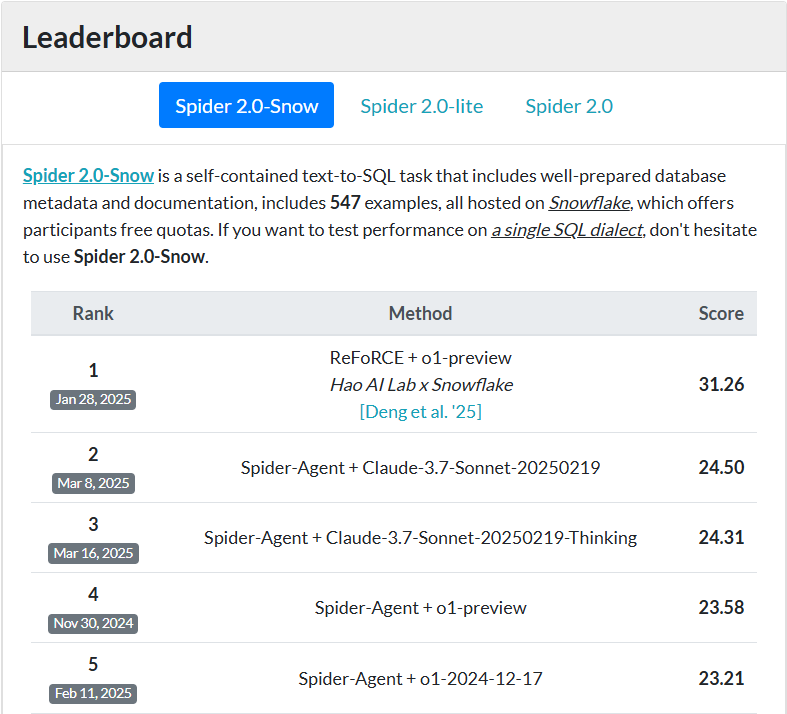
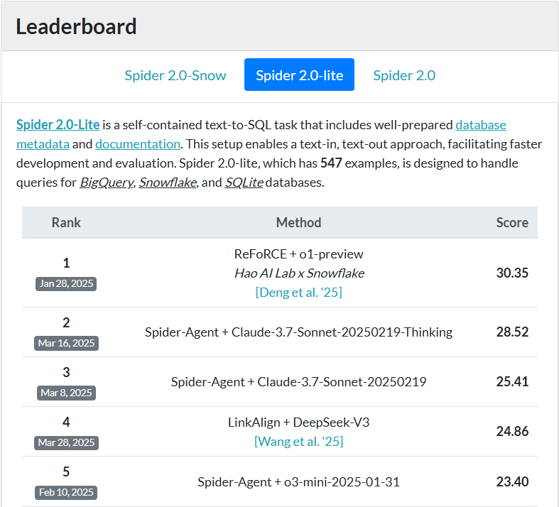
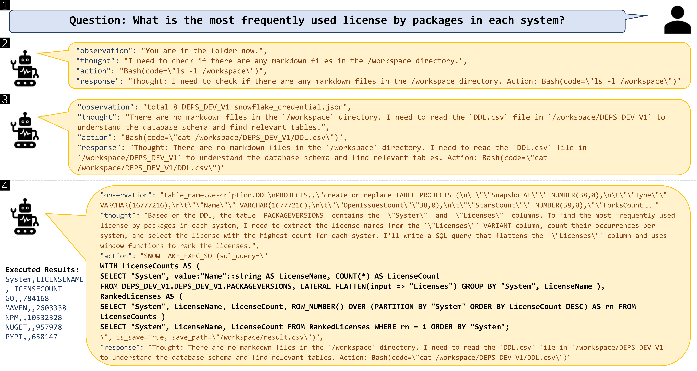
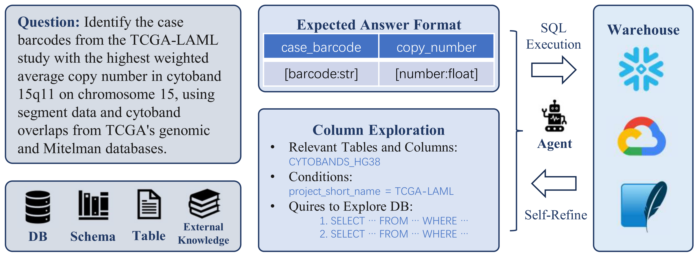
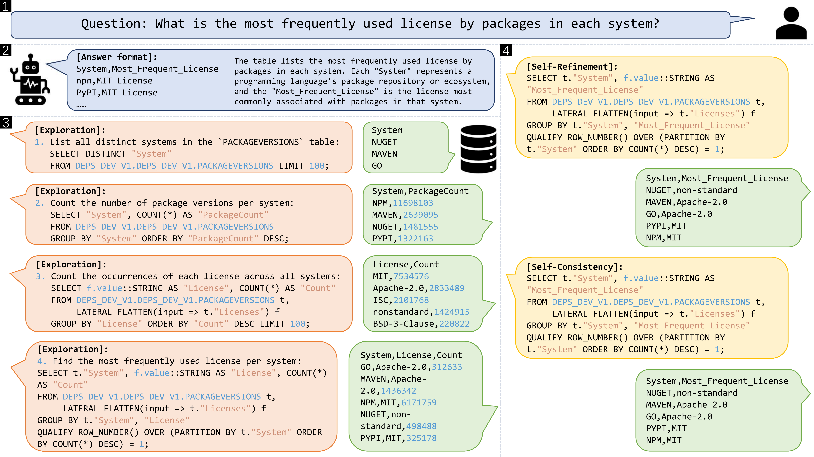

Background: Toy-Level vs. Enterprise-Grade Text-to-SQL Tasks
Text-to-SQL systems have made querying structured data more accessible through natural language, but transitioning from toy-level datasets to enterprise-grade applications reveals major challenges. For example, leading companies like Snowflake recognize Text-to-SQL as a “holy grail” problem in today’s database+ML community, and are actively working to address these challenges to deliver exceptional services to their customers.
Early benchmarks like Spider 1.0 and BIRD provided valuable starting points, but they fall short in complexity—featuring relatively small schemas and limited SQL functionality, with minimal support for external knowledge or diverse SQL dialects. In contrast, Spider 2.0 and its variants (Spider 2.0-lite and Spider 2.0-snow) introduce realistic enterprise scenarios, with more databases, SQL queries, function use, SQL dialects, and external knowledge. The following table compares the latest Spider 2.0 with existing benchmarks side-by-side. Despite their importance, performance on Spider 2.0 remains capped at ~25%, underscoring the need for systems that can handle ambiguous queries, long contexts, and dialect-specific reasoning in real-world environments.
| Dataset | # Test Examples | # Test DB | # Columns / DB | # Tokens / SQL | # Functions / SQL | External Knowledge | SQL Dialect |
|---|---|---|---|---|---|---|---|
| Spider 1.0 | 2,147 | 40 | 27.1 | 18.5 | 0.0 | ✗ | ✗ |
| BIRD | 1,789 | 15 | 54.2 | 30.9 | 0.4 | ✓ | ✗ |
| Spider 2.0-lite | 547 | 158 | 803.6 | 144.5 | 6.5 | ✓ | ✓ |
| Spider 2.0-snow | 547 | 152 | 812.1 | 161.8 | 6.8 | ✓ | ✓ |
Conventional Text-to-SQL Benchmarks
SELECT T1.Capital
FROM country AS T1
JOIN driver AS T2 ON T1.Country_ID = T2.Country
ORDER BY T2.Points DESC LIMIT 1;
SELECT COUNT(DISTINCT c."id") AS "Number_of_Cards"
FROM "cards" c
JOIN "foreign_data" f ON c."uuid" = f."uuid"
WHERE c."artist" = 'Volkan Baǵa' AND f."language" = 'French';
Spider 2.0
WITH paad_patients AS (
SELECT DISTINCT "bcr_patient_barcode" AS "ParticipantBarcode"
FROM PANCANCER_ATLAS_2.PANCANCER_ATLAS.FILTERED_CLINICAL_PANCAN_PATIENT_WITH_FOLLOWUP
WHERE "acronym" = 'PAAD'
),
kras_mutations AS (
SELECT DISTINCT "ParticipantBarcode"
FROM PANCANCER_ATLAS_2.PANCANCER_ATLAS.FILTERED_MC3_MAF_V5_ONE_PER_TUMOR_SAMPLE
WHERE "Study" = 'PAAD' AND "FILTER" = 'PASS' AND "Hugo_Symbol" = 'KRAS'
),
tp53_mutations AS (
SELECT DISTINCT "ParticipantBarcode"
FROM PANCANCER_ATLAS_2.PANCANCER_ATLAS.FILTERED_MC3_MAF_V5_ONE_PER_TUMOR_SAMPLE
WHERE "Study" = 'PAAD' AND "FILTER" = 'PASS' AND "Hugo_Symbol" = 'TP53'
),
both_mutations AS (
SELECT "ParticipantBarcode"
FROM kras_mutations
INNER JOIN tp53_mutations USING ("ParticipantBarcode")
),
neither_mutations AS (
SELECT paad."ParticipantBarcode"
FROM paad_patients paad
LEFT JOIN kras_mutations kras ON paad."ParticipantBarcode" = kras."ParticipantBarcode"
LEFT JOIN tp53_mutations tp53 ON paad."ParticipantBarcode" = tp53."ParticipantBarcode"
WHERE kras."ParticipantBarcode" IS NULL AND tp53."ParticipantBarcode" IS NULL
)
SELECT
(SELECT COUNT(*) FROM both_mutations) - (SELECT COUNT(*) FROM neither_mutations) AS "Net_difference"
Limitations of Current Method

ReFoRCE
Overview

Table Information Compression
Following the approach of Spider 2.0, we create a dictionary for each example using Database Definition Language (DDL) files that include external knowledge and table structures. When DDL files exceed setting size, we apply pattern-based matching to merge tables with similar prefixes or suffixes, retaining only one representative DDL file. For others, we provide only table names.
For example, the GA360 database includes tables from GA_SESSIONS_20160801 to GA_SESSIONS_20170801, each with DDL files over 150 KB, totaling more than 50 MB. Our pattern-based compression reduces these databases to under 100 KB (fewer than 30k tokens), ensuring they stay within the maximum context length.
Also a simple API-based schema linking ensures the context length remains manageable for long prompts.
Given the database information $\mathcal{D}$ and auxiliary documentation $\mathcal{E}$, we apply the $\texttt{compress}$ function and concatenate the result with the question $\mathcal{Q}$ to form the initial input prompt $\mathcal{P}_{\text{init}}$:
Expected Answer Format Restriction
Realistic Text-to-SQL problems often face challenges with long contexts exceeding 100k tokens, leading to loss of critical information and inaccurate outputs. To address this, we propose Expected Answer Format Restriction, which involves generating and reinforcing the expected answer format (e.g., column names, data types, rows) at the outset and during self-refinement. The response must follow a strict CSV format, explicitly defining columns and ensuring each record is on a separate row. Specific cases like superlatives, percentages, and coordinates are handled clearly, and ambiguous terms may prompt additional columns for precision.
For instance, when given the query “Count the number of counties that experienced an increase in unemployment from 2015 to 2018, using 5-year ACS data, and a decrease in dual-eligible enrollee counts between December 1, 2015, and December 1, 2018,” model may be misled by the verbose description and extensive database context—ultimately selecting an incorrect table containing fields like geo_id, UNEMPLOYMENT_RATE_2015, UNEMPLOYMENT_RATE_2018, DUAL_ENROLLMENT_2015, and DUAL_ENROLLMENT_2018. The expected output, however, is simply a number. To guide the model accordingly, we apply format restrictions—using prompts like “answer format is Number of Countries"—to constrain the output format and prevent irrelevant responses.
For an LLM chat session $\mathcal{L}_{\text{session}}$, we input initial and format prompts $\mathcal{P}\_{\text{format}}$ to generate the expected answer format $\mathcal{F}$:
Exploration of Potentially Useful Columns
When directly providing database information to an LLM, lack of details on value types and SQL dialects often leads to syntax errors and incorrect function calls, which are time-consuming to correct. To address these issues, we design an approach to explore relevant columns, beginning with simple SQL queries that gradually increase in complexity.
For example, in Snowflake dialect cases, queries typically follow the structure SELECT DISTINCT "COLUMN_NAME" FROM DATABASE.SCHEMA.TABLE WHERE ..., ranging from simple conditions to more complex ones. We also employ techniques like LATERAL FLATTEN for handling nested columns, and fuzzy string matching with ILIKE or LIKE to improve robustness and avoid incorrect matches.
We also use an additional LLM chat session $\mathcal{L}'\_{\text{session}}$ with column exploration prompts $\mathcal{P}\_{\text{exploration}}$, to generate relevant tables, columns $\mathcal{P}\_{\text{column}}$, and SQL queries $\mathcal{S}\_{\text{exploration}}$. The resulting queries are executed using database APIs to retrieve results $\mathcal{R}\_{\text{exploration}}$:
$$ \begin{align} \mathcal{R}\_{\text{exploration}} = \texttt{API}(\mathcal{S}\_{\text{exploration}}). \end{align} $$
Self-Refinement Workflow for Problem-Solving
Parallelization
Experiments
Results
🧊 Spider 2.0-Snow Leaderboard
| Rank | Date | Method | Score |
|---|---|---|---|
| 1 | Jan 28, 2025 | 🚀ReFoRCE + o1-preview | 31.26 |
| 2 | Mar 8, 2025 | Spider-Agent + Claude-3.7-Sonnet-20250219 | 24.50 |
| 3 | Mar 16, 2025 | Spider-Agent + Claude-3.7-Sonnet-20250219-Thinking | 24.31 |
| 4 | Nov 30, 2024 | Spider-Agent + o1-preview | 23.58 |
| 5 | Feb 11, 2025 | Spider-Agent + o1-2024-12-17 | 23.21 |
| 6 | Feb 1, 2025 | Spider-Agent + o3-mini-2025-01-31 | 19.20 |
| 7 | Mar 7, 2025 | Spider-Agent + Claude-3.5-Sonnet-20241022 | 19.01 |
| 8 | Feb 10, 2025 | Spider-Agent + Claude-3.5-Sonnet-20241022 | 15.54 |
| 9 | Mar 13, 2025 | Spider-Agent + Gemini-2.0-Pro | 13.89 |
| 10 | Nov 30, 2024 | Spider-Agent + GPT-4o-2024-11-20 | 12.98 |
💡 Spider 2.0-Lite Leaderboard
| Rank | Date | Method | Score |
|---|---|---|---|
| 1 | Jan 28, 2025 | 🚀ReFoRCE + o1-preview | 30.35 |
| 2 | Mar 16, 2025 | Spider-Agent + Claude-3.7-Sonnet-20250219-Thinking | 28.52 |
| 3 | Mar 8, 2025 | Spider-Agent + Claude-3.7-Sonnet-20250219 | 25.41 |
| 4 | Mar 28, 2025 | LinkAlign + DeepSeek-V3 | 24.86 |
| 5 | Feb 10, 2025 | Spider-Agent + o3-mini-2025-01-31 | 23.40 |
| 6 | Nov 30, 2024 | Spider-Agent + o1-preview | 23.03 |
| 7 | Mar 10, 2025 | Spider-Agent + DeepSeek-R1 | 13.71 |
| 8 | Feb 10, 2025 | Spider-Agent + GPT-4o-2024-11-20 | 13.16 |
| 9 | Mar 13, 2025 | Spider-Agent + QwQ-32B | 11.33 |
| 10 | Dec 31, 2024 | Duo | 8.96 |
Case Study

Get started
Acknowledgements
Citation
@article{deng2025reforce,
title={ReFoRCE: A Text-to-SQL Agent with Self-Refinement, Format Restriction, and Column Exploration},
author={Deng, Minghang and Ramachandran, Ashwin and Xu, Canwen and Hu, Lanxiang and Yao, Zhewei and Datta, Anupam and Zhang, Hao},
journal={arXiv preprint arXiv:2502.00675},
year={2025}
}